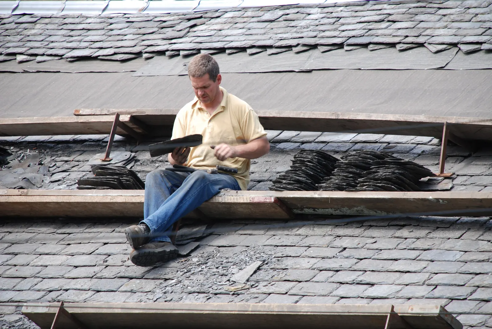
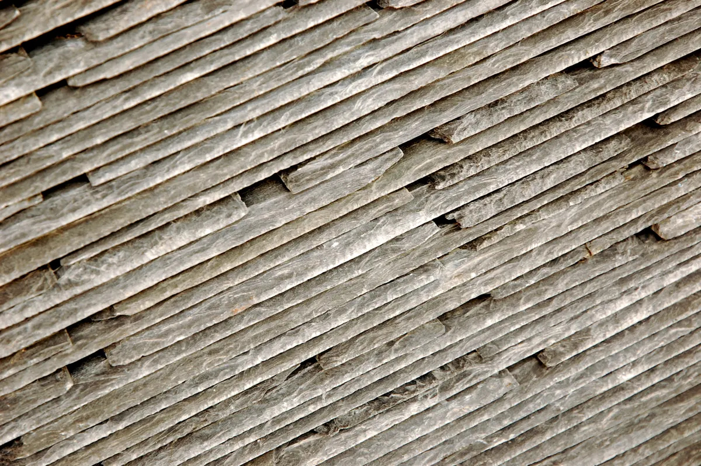
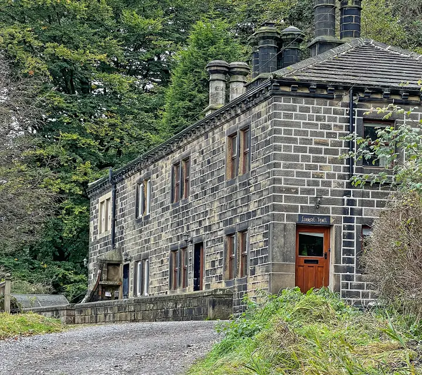

Slate re‑roofs
Strip, sort and relay. We save every sound slate, top up with matching reclaimed Welsh, and fit new battens and breathable membrane.
Demo build: fictional business. The firm, number, address and reviews are made up; the form sends nothing.
We're a four-person slating firm working on the stone terraces and farmhouses between Todmorden and Halifax. Most of what we do is putting Welsh slate back properly: sorted, re‑nailed and finished with lead that's dressed by hand.
Office open Monday to Friday, 7:30 to 5. From October to March the storm line is answered round the clock and we'll make a leaking roof safe the same day where we can get to it.

Domestic roofs and small commercial jobs. Written quote first, photos of the work when we're done.
Strip, sort and relay. We save every sound slate, top up with matching reclaimed Welsh, and fit new battens and breathable membrane.
Replaced on copper tingles or re‑nailed if the batten's sound. We'll tell you if it's nail fatigue across the whole roof rather than patch it for ever.
Code 4 and Code 5 lead for step and cover flashings, chimney backs, valleys and dormer cheeks, dressed and patinated on site.
EPDM rubber membrane for garages, extensions and dormer tops, bonded in one sheet with no hot works. Torch-on felt repairs where it's already felt.
Repointing in lime mortar, re‑flaunching round the pots, new cowls and caps, and taking redundant stacks down below the roofline.
Cast iron re‑sealed and re‑hung, stone gutters re‑lined, uPVC and timber fascias replaced. Cleared and flow-tested with a hose before we go.
Make-safe first: sheeting, loose slates off the roof, a ridge tile that's about to come down. Then a proper quote once the wind's dropped.
A look over the whole roof with a camera pole or from a roof ladder, and a short written report with photos of anything we'd fix and what can wait.

A two-up two-down with a front pitch that had been patched with mastic for years. Water was coming through by the chimney breast in the back bedroom.
Price for this one was £8,900 including scaffold and waste. Figures are illustrative for this demo; every roof is quoted after a visit.
Rang on the Sunday of the January storm with water coming down the landing light. Sheeted by teatime, re‑roofed in March. They told us the back pitch had another ten years in it and left it alone.
Three quotes for the chimney. Fernhill were the only ones who went up and looked before pricing it. Turned out it was the flashing, so a third of what the others wanted.
Sample reviews written for this demo.
Mostly within half an hour of the yard in Hebden Bridge, which covers the upper Calder Valley and over the tops into Lancashire and Brontë country.
Postcodes HX1 to HX7, OL13 to OL15 and BD20 to BD22. Further than that, ring and ask: we do travel for lead and heritage slate work.
Tell us what's going on and roughly where. A photo from the street or the back garden helps more than you'd think.
We ring back the same working day to arrange a look. Quotes are written, itemised and fixed for 60 days.
Leak right now? Ring 01632 960418.
